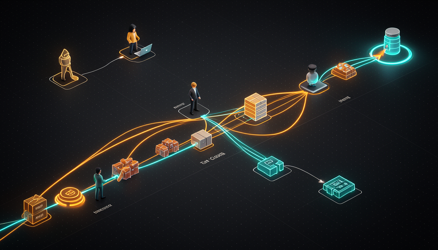
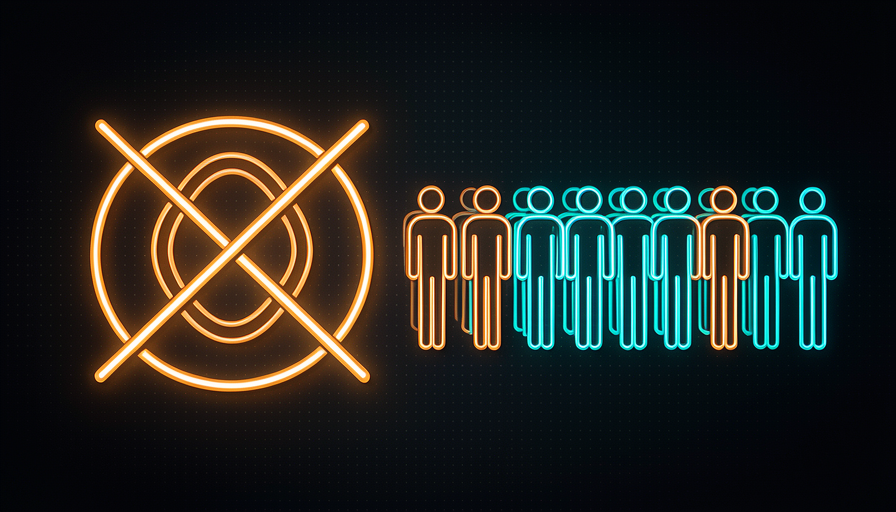

📖 Glossário vivo (os termos novos deste módulo)
A trilha 1 já definiu "modelo", "agente", "prompt" e "harness". Aqui ficam só os termos novos de loops e filas — fixe estes antes de seguir:
while faz isso: "enquanto X for verdade, repita".while em bash que chama o Claude Code com o mesmo prompt de novo e de novo, sem parar.agent:implement) que marca o estado e dispara automações.🔁 O Ralph loop (Huntley)
🧠 Imagine assim: uma máquina de lavar no ciclo de centrifugação — gira, gira, gira sem parar até alguém apertar o botão. O Ralph loop é isso com IA: você "liga a centrifugação" e o agente roda a mesma ordem em círculos, sozinho, a noite inteira.
Em julho, o engenheiro Geoffrey Huntley publicou um artigo (14/jul) que viralizou na comunidade: o Ralph loop. A ideia é deliciosamente simples — você escreve um loop while em bash que chama o Claude Code passando o mesmo prompt de novo e de novo. O agente termina uma passada, o loop reinicia, e ele recebe a instrução outra vez. Roda assim, em AFK, sem você no teclado.
O nome "Ralph" é uma piada interna (referência ao personagem Ralph Wiggum, dos Simpsons, que faz a coisa simples sem pensar muito) — e parte da graça é justamente essa: brutalmente simples, e ainda assim eficaz. Por que funciona? Porque cada nova passada do agente recomeça com contexto fresco, relê o estado do codebase e dá mais um passo. É a forma mais crua de tirar você da equação. O erro comum aqui é achar que "loop = mágica autônoma": o loop só repete; quem faz o trabalho ainda é o agente, e ele depende do prompt e do harness por trás.
O Ralph loop: um while que reinjeta o mesmo prompt no Claude Code, indefinidamente.
⚠️ Erro comum de iniciante
Pensar que basta "deixar o loop rodando" e milagres acontecem. Sem condição de parada, sem critério de "pronto" e sem um prompt bem feito, o loop pode girar a noite toda repetindo o mesmo erro — e queimando tokens. O loop é o motor de repetição; a inteligência continua sendo o seu harness.
Em 1 frase: o Ralph loop é um while que chama o Claude Code com o mesmo prompt, repetidamente, sozinho.
Indo mais fundo (opcional): de onde veio "Ralph"?
Huntley batizou a técnica de "Ralph" como uma brincadeira: a abordagem é tão direta e ingênua quanto o personagem que apenas faz a tarefa óbvia em loop, sem estratégia sofisticada. O insight do artigo é que, contra a intuição, essa simplicidade bruta às vezes vence técnicas elaboradas — desde que o prompt e o ambiente estejam bons. É a versão "força bruta" da automação agêntica.
🎯 Por que loop ≠ resposta
🧠 Imagine assim: você quer que alguém pinte uma parede. Você pode (a) mandar a pessoa "pintar paredes para sempre" e torcer pra ela acertar a sua, ou (b) dar uma tarefa específica: "pinte esta parede de azul". A opção (b) é quase sempre melhor. Loop ≠ tarefa.
Aqui entra a posição de Pocock — e é uma virada de chave importante. Ele reconhece que o Ralph loop é engenhoso, mas diz, com todas as letras: "não preciso rodar como loop — só preciso do agente AFK pegar uma tarefa específica e fazer." Em outras palavras, o que o destrava de verdade não é a repetição infinita; é o AFK (o agente trabalhando sem você presente). O loop é só uma forma — e não a melhor — de alcançar isso.
Por quê? Porque um loop único que tenta "fazer tudo" não bate com a forma como times reais trabalham. Um time não tem um robô girando para sempre; tem um backlog de tarefas claras, cada uma com começo, meio e fim. A repetição cega gasta tokens, perde o foco e dificulta dizer "isto aqui está pronto". A resposta certa, segundo Pocock, é trocar o verbo: em vez de "loopar", pense em "pegar a próxima tarefa da fila". Mesma autonomia, muito mais controle e clareza. Erro comum: confundir "rodar sozinho" (bom: AFK) com "rodar em círculos" (raramente o que você quer).
Recuperação rápida: para Pocock, o que realmente destrava o trabalho autônomo?
Em 1 frase: o que te destrava é o AFK (tarefa específica feita sozinha), não a repetição infinita do loop.
📋 A fila de tarefas
🧠 Imagine assim: a fila do caixa do mercado. As pessoas (tarefas) chegam e entram na fila. Cada operador (nó) chama a próxima, atende, finaliza e chama a seguinte. Ninguém fica "atendendo para sempre em círculos" — atende-se um cliente de cada vez, até a fila esvaziar.
A frase central de Pocock é: "eu penso nisto principalmente como filas, não loops." Uma fila é simplesmente o seu backlog de tarefas. E ele dá o exemplo concreto do Sand Castle (a ferramenta dele): ele olha as issues, faz a triagem (é trivial? é possível?), adiciona o label agent:implement e o agente implementa via GitHub Actions (visto no módulo 4.3).
E aí vem a definição que organiza tudo: "todo desenvolvimento é só uma fila de tarefas: PMs adicionam à fila, você as completa; múltiplos nós (devs) pegam itens da fila." Repare como isso descreve qualquer time de software do mundo — sem nenhuma IA envolvida. O PM alimenta a fila, os desenvolvedores consomem. A sacada de Pocock é que os "nós" agora podem ser agentes em vez de (ou além de) humanos. Você não muda o modelo mental do time — só troca quem puxa os itens. Por isso a fila encaixa naturalmente, e o loop único que "faz tudo" não bate com como times trabalham.

Em 1 frase: todo desenvolvimento é uma fila — PMs adicionam, nós (devs ou agentes) puxam e completam.
🔎 Triagem e escopo
🧠 Imagine assim: o pronto-socorro de um hospital. Quando o paciente chega, a enfermeira da triagem não trata na hora — ela classifica: leve, urgente, gravíssimo. Só depois cada caso vai pro lugar certo. A fila de tarefas funciona igual: classificar antes de tratar evita desperdício e caos.
Antes de um item virar trabalho, ele passa por triagem. No fluxo do Sand Castle, Pocock olha cada issue e responde duas perguntas: é trivial? e é possível? — e isso já pode ser feito em AFK. Há uma issue real (#795 no exemplo dele) que vai mudando de label: agent:explore → agent:in-progress, enquanto o bot github-actions posta um comentário de "Triage" com um TL;DR e uma estimativa de Difficulty (dificuldade).
Por que isso importa? Porque a triagem dá escopo — e escopo é o que separa uma tarefa "pegável" de um pedido vago. Quando o agente recebe "implemente a issue #795, dificuldade média, TL;DR: tal", ele tem um alvo nítido. Compare com "conserte os bugs" jogado num loop: não há onde começar nem como saber que terminou. A triagem também filtra o que não deve ir pro agente sozinho (coisas que precisam de decisão humana). O erro comum é pular a triagem e despejar tudo na fila cru — aí o agente trabalha duro no item errado, ou tropeça num item impossível.
A triagem é um funil: classifica cada issue por trivial? e possível? antes de virar trabalho.
🔬 Exemplo resolvido: o ciclo de vida de uma issue na fila
Acompanhe a issue #795 ("botão de exportar não funciona no Safari") atravessando a fila:
- 1Chega na fila — o PM (ou um usuário) abre a issue. Estado bruto, sem análise.
- 2Label
agent:explore— dispara a triagem AFK. O agente investiga e o bot posta: "TL;DR: bug de compatibilidade no Safari. Difficulty: baixa." - 3Você prioriza — vê que é trivial e seguro. Adiciona
agent:implement. - 4Label
agent:in-progress— o GitHub Actions implementa, abre um PR, e o checkpoint humano fica só no review final.
Em 1 frase: triagem (trivial? possível?) dá escopo nítido — sem ela, o agente trabalha no item errado.
👑 O rei medieval
🧠 Imagine assim: um rei numa sala do trono. Problemas chegam à porta o dia todo — uma invasão na fronteira, uma colheita perdida, uma proposta de aliança. O rei não corre para cada um; ele recebe, avalia e prioriza. É exatamente a postura de quem comanda uma fila.
David (o entrevistador) trouxe uma analogia que cristaliza a diferença entre loop e fila: o rei medieval. Pense num ministro numa região distante rodando em loop por conta própria — ele pode dar certo, ou pode dar muito errado, e o rei só descobre quando o estrago já aconteceu. Essa é a abordagem "loop": autonomia cega, sem priorização central. O rei sensato não quer isso.
O rei quer a abordagem de fila: os problemas chegam até ele (uma invasão, uma fome, uma proposta de brand deal — onde ele checa a reputação primeiro antes de aceitar), e ele prioriza. De 50 bugs que chegam, talvez só 3 sejam críticos — e ele decide quais atacar agora. O ponto, nas palavras da conversa: você continua no comando. A fila não tira seu poder de decisão; ela o concentra no que importa. O loop entrega o reino a um ministro distante; a fila mantém a coroa na sua cabeça. Erro comum: delegar autonomia sem manter o ponto de priorização — aí você vira um rei ausente, e o reino faz o que quiser.

✗ Loop = ministro distante
- • Roda sozinho longe, sem priorização.
- • Pode dar certo — ou desastre silencioso.
- • Você só descobre o estrago no fim.
✓ Fila = rei no comando
- • Problemas chegam, você prioriza.
- • 50 bugs, só 3 críticos agora.
- • Autonomia delegada, coroa na sua cabeça.
Em 1 frase: seja o rei que recebe e prioriza a fila — não o que entrega o reino a um ministro em loop.
🕸️ Múltiplos nós na fila
🧠 Imagine assim: uma cozinha de restaurante movimentado. Há uma única fila de pedidos (a comanda), mas vários cozinheiros. Cada um pega o próximo pedido, prepara e devolve. Mais cozinheiros = a mesma fila esvazia mais rápido — sem ninguém atrapalhar o outro.
Fechando o módulo: a maior vantagem de pensar em fila é que ela escala com múltiplos nós. Lembre da frase de Pocock: "múltiplos nós (devs) pegam itens da fila." Cada nó pode ser você, um colega, ou um agente rodando em GitHub Actions (módulo 4.3). Como cada tarefa tem escopo claro (graças à triagem), dois ou três agentes podem trabalhar em paralelo em itens diferentes sem se atrapalhar — exatamente o que você viu no módulo 4.2 sobre paralelizar com sandboxes. O loop único não escala assim: ele é um trabalhador só, girando. A fila é uma arquitetura — abre espaço para "dois, três, quatro de você", como Pocock descreve o AFK. Use o esqueleto abaixo para experimentar o Ralph loop e sinta na prática por que, no fim, você vai querer migrar dele para uma fila com triagem:
#!/usr/bin/env bash
# Ralph loop (Geoffrey Huntley, 14/jul) — o esqueleto cru:
# um while que chama o Claude Code com o MESMO prompt, de novo e de novo.
PROMPT="Pegue a próxima tarefa pendente em TODO.md, implemente-a,
rode os testes e marque-a como feita. Se TODO.md estiver vazio, escreva DONE.txt."
while true; do
# injeta o mesmo prompt no agente, em modo AFK (sem você no teclado)
claude code -p "$PROMPT"
# condição de parada: o agente sinaliza que a fila esvaziou
if [ -f DONE.txt ]; then
echo "Fila vazia — encerrando o loop."
break
fi
sleep 2 # respiro entre as passadas
done
# Lição do módulo: isto FUNCIONA, mas é um loop cego (1 nó, foco difuso).
# Prefira virar isto numa FILA: triagem -> label agent:implement ->
# vários nós (agentes em GitHub Actions) puxam itens em paralelo. Você, o rei, prioriza.
Recuperação rápida: qual a maior vantagem da fila sobre o loop único?
Em 1 frase: a fila é uma arquitetura que escala — vários nós puxam tarefas claras em paralelo; o loop é só um trabalhador girando.
🧾 Resumo do Módulo
while em bash que chama o Claude Code com o mesmo prompt, repetidamente.Próximo módulo:
4.5 — Sistemas auto-melhoráveis: cron de security review, telemetria → issue → fix, e por que você não precisa do modelo mais caro.